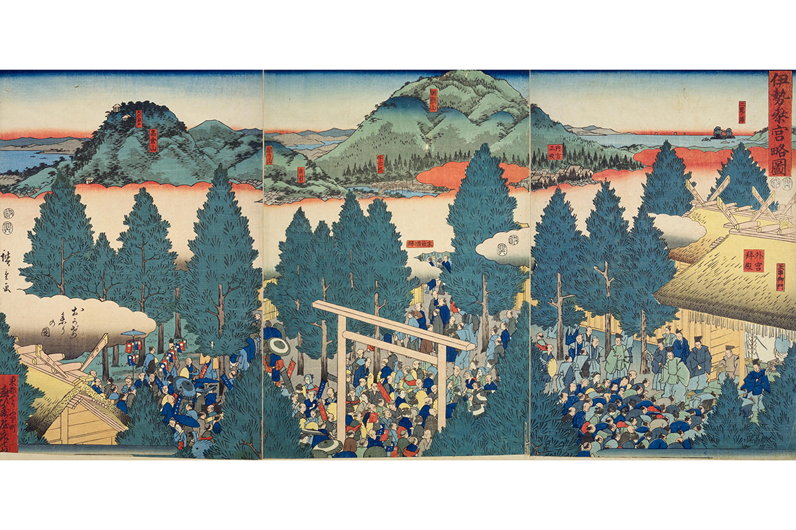
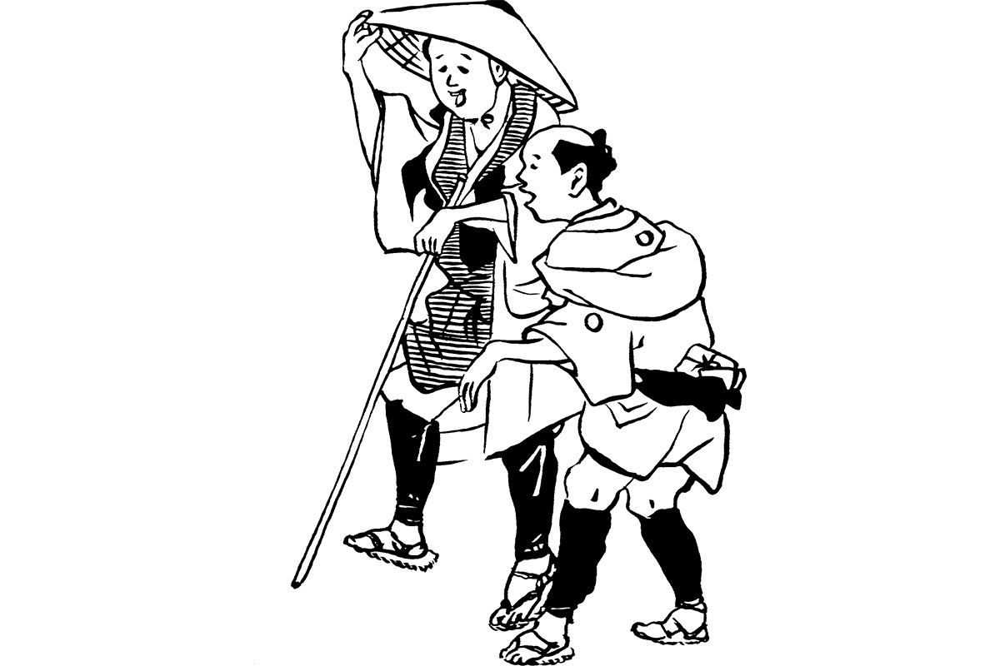
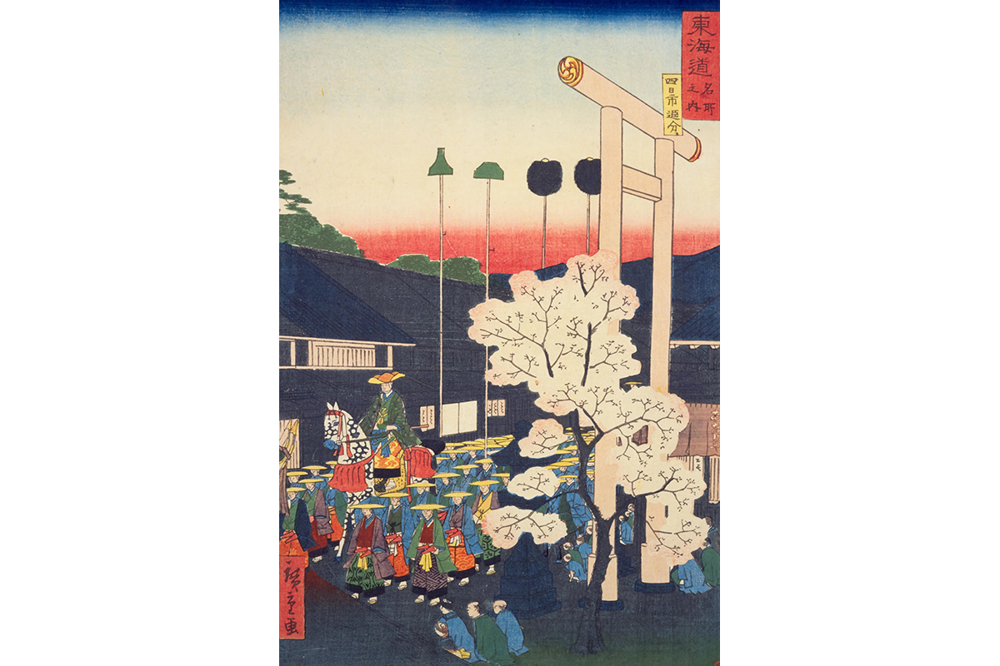
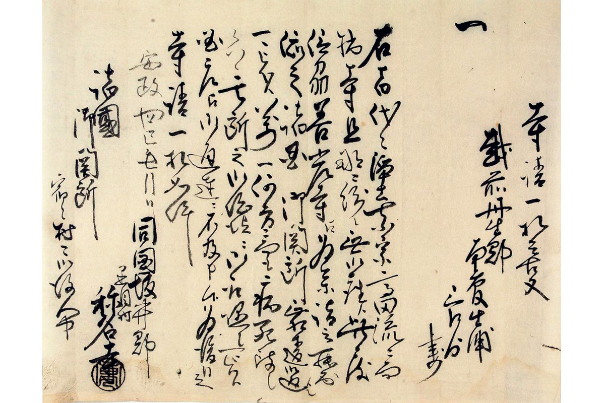
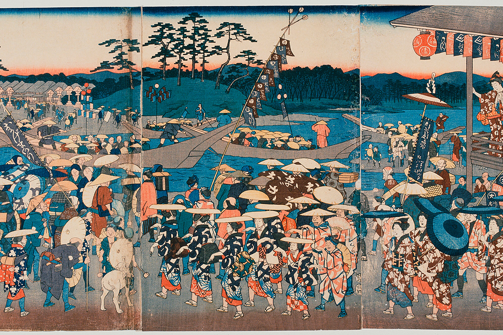

Префектура Миэ · Исэ · история
О-Исэ-маири: как Япония эпохи Эдо отправлялась в паломничество всей деревней

В эпоху Эдо простые японцы мечтали хотя бы раз в жизни дойти до святилища Исэ. Из этой мечты выросло первое в стране массовое путешествие: с групповыми поездками, общей кассой, проводниками и сувенирами для соседей.
Мечта
Путешествие раз в жизни
«Хочу в Исэ, хочу увидеть дорогу на Исэ, хоть раз в жизни», пели в народной песне исэ-ондо. В эпоху Эдо (1603–1868) паломничество в святилище Исэ, о-Исэ-маири, стало настоящей модой среди горожан и крестьян. О таком путешествии мечтал каждый.
Так было не всегда. Святилище Исэ задумано как место, где император подносит дары богам и молится о мире в стране. Здесь веками действовало правило «сихэй киндан»: без разрешения императора даже члены его семьи и знать не могли приносить собственные дары. Молиться в святилище приходили лишь немногие: императорские посланники и сайо, незамужние принцессы, которые служили святилищу. Запрет на личные подношения в принципе сохраняется и сегодня, а вот молиться простым людям разрешили примерно с конца Средневековья.

Настоящий бум начался в эпоху Эдо, и причин у него было несколько. Сикинэн сэнгу, перестройка святилища раз в 20 лет, прервалась в годы междоусобных войн, а когда её возобновили, о святилище снова заговорили по всей стране. Священнослужители святилища, онси, сами ездили по провинциям и рассказывали о милости богов Исэ. Наконец, в стране наступил мир, и появились пять больших трактов с налаженными дорогами.
Шли обычно небольшой группой: с друзьями, соседями, сослуживцами. Раз уж путешествие выпадает один раз в жизни, по дороге заглядывали в знаменитые места, храмы и святилища, и это было едва ли не главной радостью поездки. Путеводителем служили рассказы тех, кто уже побывал в Исэ, и книга «Пешком по Токайдо» («Токайдотю хидзакуригэ») Икку Дзиппэнся (1765–1831). Этот писатель прославился комическими романами, а «Пешком по Токайдо» с приключениями двух весельчаков, бредущих в Исэ, стала одной из самых читаемых книг своего времени. В Исэ же паломников ждали онси с щедрым приёмом.
Если посмотреть на о-Исэ-маири сегодняшними глазами, всё узнаваемо. Онси, как менеджер турагентства, расписывает прелести поездки, друзья собираются в компанию и отправляются в дорогу. В пути покупают подарки семье и соседям, а домой возвращаются с ворохом историй. По сути, это и был первый в Японии групповой тур.
Дорога
С чего начался туристический бум
Путешествовать для удовольствия японцы начали в середине эпохи Эдо, в годы Гэнроку (1688–1704). Политика и экономика тогда были спокойны, расцветали наука и искусство, и одновременно вспыхнула мода на путешествия. Свободно передвигаться простым людям не позволяли местные князья, но на паломничество в храм или святилище и на лечение в онсэнах разрешение давали легче. Этим и пользовались купцы, горожане и даже крестьяне.

Главное, что сделало путешествие доступным, это дороги. Иэясу Токугава (1543–1616), основатель сёгуната, правившего Японией больше двух с половиной веков, ещё в начале своего правления привёл в порядок пять трактов, соединявших Эдо с Киото и другими городами. По ним ездили князья с обязательными визитами в столицу, по ним везли товары. На станциях держали наготове людей и лошадей. Чем оживлённее становилось движение, тем больше росли постоялые города и тем удобнее в них было ночевать. Так путешествие оказалось по силам и простому человеку.
Тракт
Через Токайдо в Исэ
Самым популярным путешествием было именно о-Исэ-маири. Ходили поодиночке, но часто и группой: в складчину, через общество «ко», которое собирало деньги на поездку.
С Токайдо путники с востока сворачивали на Исэ-кайдо. Жители постоялых городов вдоль этой дороги по обычаю помогали паломникам, поэтому в Исэ мог добраться и человек без денег. Неудивительно, что именно о-Исэ-маири сделало путешествия общенациональной модой.
Без одной бумаги в дорогу было не выйти. Удостоверение «орай тэгата» служило паспортом: передвижение простых людей было ограничено, и такую бумагу выдавал настоятель семейного храма. Заставы стояли по всей стране, и без пропуска пройти их было нельзя. Простому человеку получить пропуск было трудно, но для паломничества в Исэ делали исключение и выдавали его без лишних условий. Пропуск годился для любой дороги, поэтому, раз уж он получен, по пути туда и обратно старались осмотреть как можно больше знаменитых мест.

Вопросы
Как ходили в Исэ
Сколько длилась дорога?
Иногда около трёх месяцев. Многие не спешили прямо к святилищу и обратно, а заходили по пути в знаменитые места, храмы и святилища, так что от выхода из дома до возвращения проходило несколько месяцев. Из Эдо, например, обычно заглядывали на гору Акиха, в святилище Ацута, в Киото и в святилище Компира.
Сколько это стоило?
По подсчётам 2020 года, двухмесячное путешествие обошлось бы в пересчёте на нынешние деньги минимум в 600 000 иен: даже если тратить по 10 000 иен в день. Еда, ночлег, дорога, развлечения, подарки, всё стоило денег, и для простого человека сумма была огромной. Поэтому в деревнях создавали общества исэ-ко: все жители копили деньги в общую кассу, а в Исэ отправлялся представитель. Он проходил обряд очищения за всю деревню и привозил домой подарки и рассказы.
Сколько людей приходило?
Примерно раз в 60 лет в Исэ начиналось настоящее паломническое безумие: со всей страны к святилищу шли одновременно. Такое паломничество называли «нукэ-маири», «тайное паломничество», потому что люди вдруг бросали работу и уходили, и «окагэ-маири», паломничество за милостью богов. В 1830 году, через год после сикинэн сэнгу, меньше чем за полгода святилище, по записям, посетили около 4,6 млн человек.

Правда, что можно было пойти без денег?
Правда. В годы окагэ-маири тайных паломников было особенно много, и большинство уходили без гроша. С собой брали только черпак. Вдоль дороги паломникам бесплатно давали еду и ночлег, это называлось «сэгё», а черпак служил знаком, что человек идёт в Исэ и просит помощи. Тот, кто помогал, по общему убеждению, совершал доброе дело и копил заслуги, поэтому помогали охотно. С одним черпаком действительно можно было дойти до Исэ.
Где ночевали в Исэ?
В домах онси. Онси ездили по провинциям, принимали заказы на молитвы, раздавали календари, амулеты и подарки из Исэ и собирали пожертвования деньгами и рисом. Своими рассказами о милости святилища они во многом и разожгли моду на паломничество. Онси создавали в деревнях общества исэ-ко, и когда члены «своего» общества приходили в Исэ, хозяин селил их у себя и угощал.
Что везли домой?
Покупали семена, косметику, ткани, кисеты и другие известные товары из разных мест. Но главным подарком был тот, что ничего не весит: песня исэ-ондо. Так называют народные песни края Исэ, и самые известные строки звучат примерно так: «Исэ держится на Цу, Цу держится на Исэ, а Нагоя в Овари держится на замке». Многие паломники выучивали песню и пели её дома.
Что случалось в пути?
Всякое, вплоть до родов и похищений. Дороги и порядок на них были куда хуже нынешних, так что заблудиться или лишиться вещей было делом обычным. Многие уходили внезапно, по первому порыву, и бывало, что в путь пускалась женщина на последнем месяце беременности и рожала прямо в дороге. Женщин, путешествовавших без мужчин, похищали и продавали в весёлые кварталы. И всё же люди снова и снова шли в Исэ.
Фото: Дзюн Ханэда, Ёситака Сато (иллюстрации).